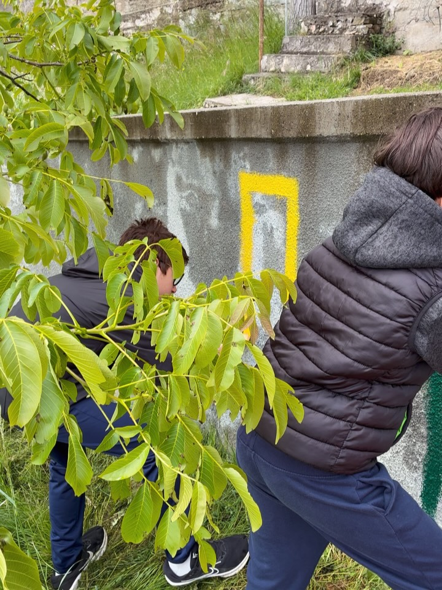
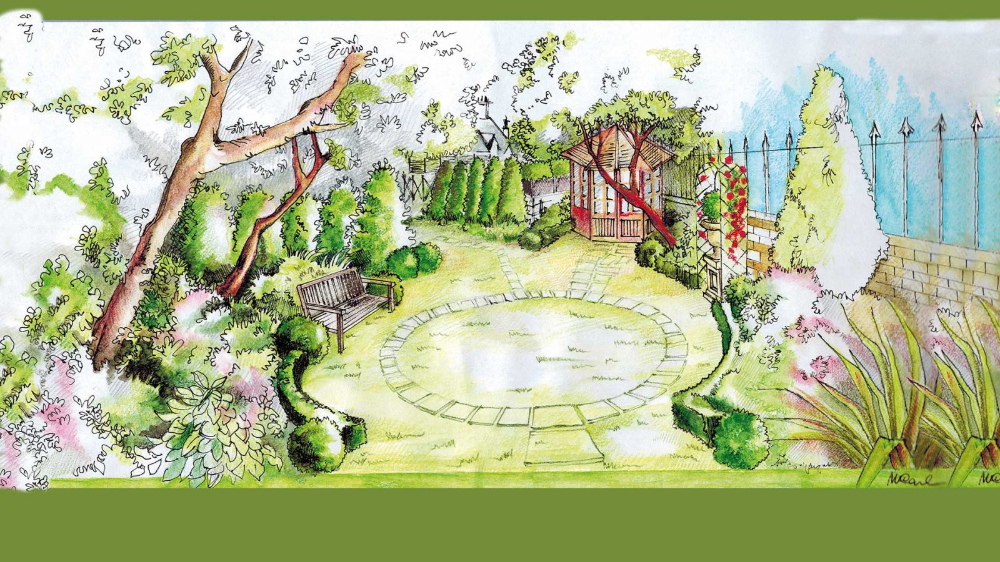
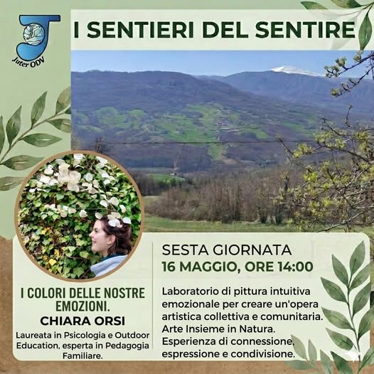
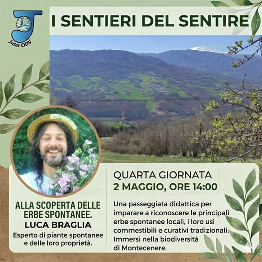
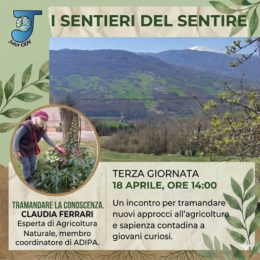
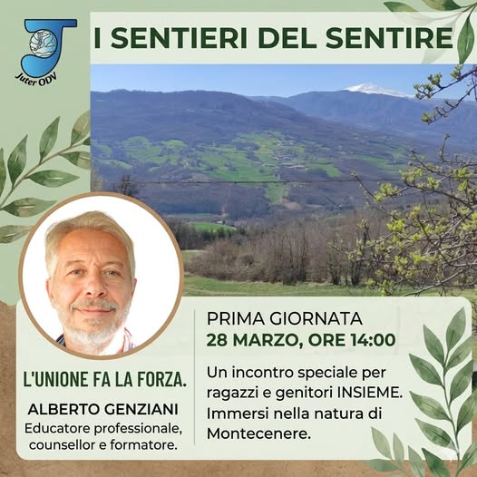
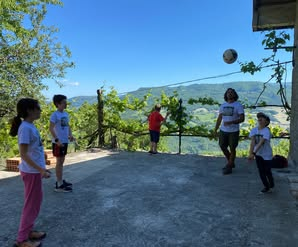
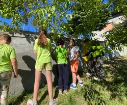

Un Progetto, Tante Storie
"I Sentieri del Sentire" è un progetto promosso da Juter ODV e sostenuto da Fondazione di Modena. Da marzo a maggio 2026, bambini, adolescenti e famiglie si sono ritrovati ogni mese a Montecenere, nell'Appennino Modenese, per vivere esperienze a contatto con la natura, imparare a riconoscere le proprie emozioni e costruire qualcosa insieme con le proprie mani.
Mani nella Terra
Il cuore del progetto sono i tre spazi verdi che i partecipanti hanno creato e curato nel tempo: un giardino sensoriale piantato dai bambini, un frutteto con alberi ancora in acclimatazione e un orto dove hanno seminato pomodori, irrigato e pacciamato con le proprie mani.
A guidare i ragazzi in questo percorso c'era anche Claudia Ferrari, esperta di agricoltura naturale, accompagnata dal marito Ugo e dalla mamma Gina. Una famiglia che ha portato al progetto energia, passione e conoscenze tramandate: dalla cura delle piante alla produzione alimentare, con quella filosofia semplice e autentica di "persone che aiutano persone".

Il Bosco che Insegna
Con la guida di Luca Braglia, esperto di erbe selvatiche, i partecipanti hanno esplorato i boschi dell'Appennino Modenese imparando a riconoscere le piante spontanee: quelle commestibili, quelle medicinali e quelle da evitare.
Una passeggiata che si è trasformata in una lezione di umiltà e rispetto: "Conoscere le piante è complesso, ma imparare ad ammirarle e rispettarle è quello che conta davvero."

Emozioni in Gioco
Alberto Genziani, educatore esperto di intelligenza emotiva, ha guidato i bambini attraverso cinque zone, ognuna dedicata a un'emozione diversa. Con l'aiuto dei burattini, i piccoli hanno imparato che le emozioni non sono né giuste né sbagliate: vanno capite e vissute.
Chiara Orsi, laureata in psicologia con specializzazione in Outdoor Education, ha condotto un laboratorio di pittura intuitiva: "Le emozioni non si spiegano, si colorano." Il risultato? Un murale collettivo al Casone, fatto di segni, colori e storie di ognuno. Mentre i bambini giocavano, i genitori avevano il loro spazio protetto per parlare di genitorialità consapevole.
La Festa del Raccolto
Il 23 maggio si è tenuta la Festa Insieme: la celebrazione finale del progetto, aperta a tutti. La musica di un sassofono ha accompagnato il pomeriggio, le famiglie hanno portato cibo da condividere e i bambini hanno fatto da guida ai tre spazi verdi che loro stessi avevano creato in questi mesi.
"Ci sono giornate che ti lasciano addosso una scia di gratitudine difficile da spiegare a parole."
Non era una conclusione. Era l'inizio di qualcosa che continua a crescere — come gli alberi del frutteto che stanno ancora prendendo radici.
I Nostri Momenti nel Verde
Scorci dal giardino, dall'orto e dagli incontri di "I Sentieri del Sentire".
Clicca sulle frecce per scorrere o attendi la rotazione automatica.







Vuoi Partecipare al Prossimo Ciclo?
"I Sentieri del Sentire" continua a crescere. Se sei interessato a portare i tuoi figli, a collaborare come esperto o semplicemente a scoprire il nostro giardino sensoriale a Montecenere, scrivici — saremo felici di accoglierti.
Contattaci Chi Siamo